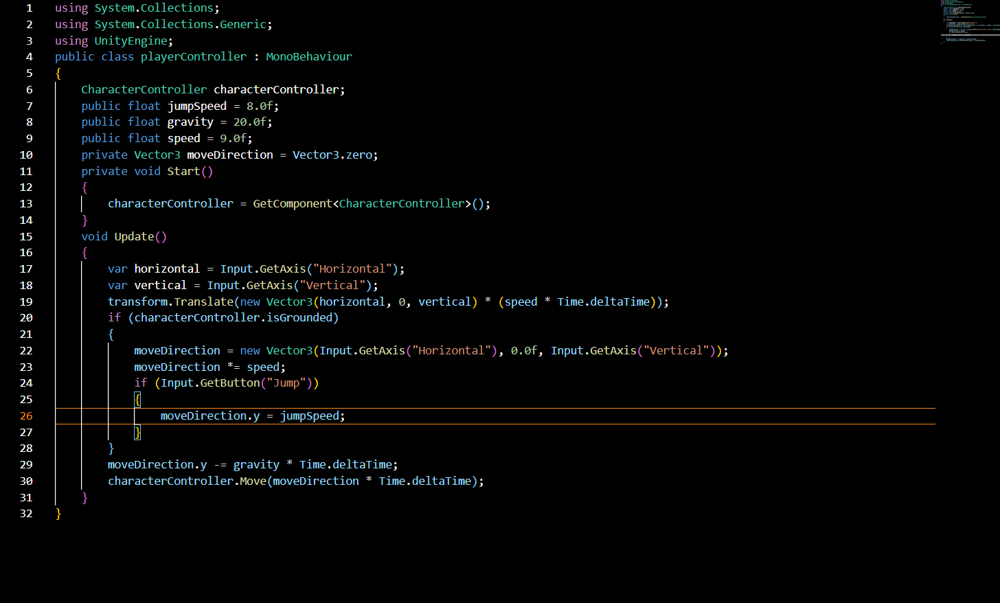

Starting out
To start out, open up the hub and select create new project. From there, select 3D, name it and create the project.
First Person Games
A first-person game is a game that has the perspective of the character. It can be almost any type of game, such as a platformer or a first person shooter. Examplse of these include Portal, first person shooter games, and almost every VR games.
To start off this project, open the Unity Hub and click new project. Make sure that 3D is selected for the type of game. From here, name the project what you want and click create project. Here you will see your workspace. To start, we right click the hierarchy and create a 3d object. We will go with the capsule. We will need to add a rigidbody component to it. Within that rigidbody, we will need to freeze the x, y, and z rotation. From here, we will also want to create a cube. This will be our ground. We can change the scale to fit under the player. We will need to move the camera up to face the character. In order to texture these, take the picture you want as the texture and drag it directly onto the item.

In order to have the camera be in the person, we do just that. Move the camera into the head of the person at the desired height.
In order to add movement we add a script to the character. In this script, we will give the character the ability to move. This code has been used from a helper online. Here is a link to this other site.Using other people's examples is very helpful within programming.
This is best explained on the site mentioned.
Third-Person Games
A third-person game is a game where the character is followed from the outside of the person. These games are like Breath of the Wild, Hades, and Horizon Zero Dawn.